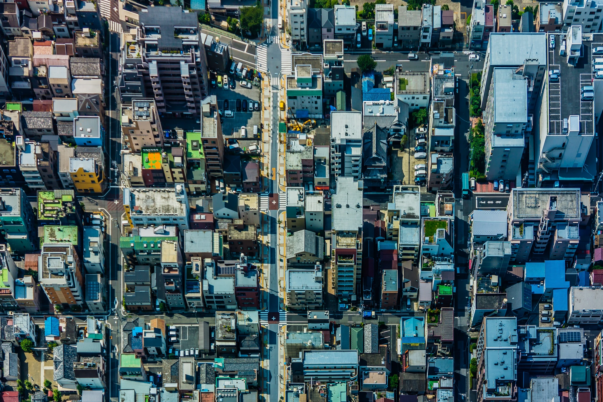
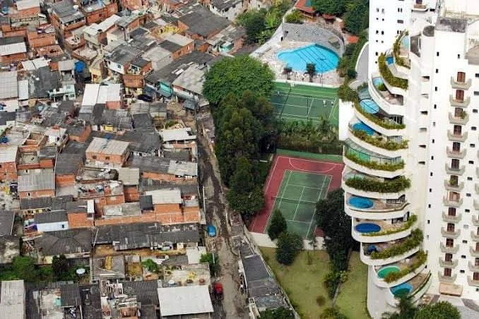

Leonardo Delfino José |
|
Yasmin Ferrari Dias |
O processo de urbanização refere-se ao crescimento das cidades em virtude do aumento populacional.
O aumento da população nas grandes cidades está associado ao êxodo rural, ou seja, ao fato de a população deixar a zona rural para dirigir-se aos centros urbanos.
O processo de urbanização ocorre segundo fatores atrativos, como a industrialização e fatores repulsivos, com a modernização do campo.
Atualmente mais da metade da população mundial vive na zona urbana.
De acordo com o Instituto Brasileiro de Geografia e Estatística, aproximadamente 80% da população brasileira vive nos centros urbanos.

O processo de urbanização refere-se ao crescimento das cidades em virtude do aumento populacional. O aumento da população nas grandes cidades está associado ao êxodo rural, ou seja, ao fato de a população deixar a zona rural para dirigir-se aos centros urbanos.
A formação de cidades acontece desde o período neolítico, Porém, elas sempre estavam vinculadas ao campo pois dependiam deste para a sobrevivencia. Agora nos tempos atuais os papeis se inverteram, o campo é quem depende das cidades.
No período industrial, o processo de urbanização teve a estrutura com base em dois tipos de causa: os fatores atrativos e os fatores repulsivos
Fatores atrativos: Ocorre devido às condições estruturais oferecidas pelo espaço das cidades, o maior deles é a industrialização.
Fatores repulsivos: Ocorre, em geral, pela modernização do campo, que propiciou a substituição do homem pela máquina, e pelo processo de concentração fundiária, que deixou a maior parte das quantidades de terras nas mãos de poucos latifundiários.
Em termos de área territorial, no mundo atual, o espaço rural é bem mais amplo do que o espaço urbano. Isso acontece pois, primeiro exige um maior espaço dos trabalhos neles desenvolvidos, como a agropecuária, estrativismo mineral e vegetal, além de delimitar as áreas e preservação ambiental. Porém, as atividades produtivas no contexto econômico e capitalista, a cidade, atualmente, vem sobrepondo-se ao campo.
O espaço rural abriga práticas como agropecuária, extrativismo mineral e vegetal, além de áreas de preservação ambiental e florestas. Já o espaço urbano, por sua vez, concentra atividades econômicas e capitalistas.
A urbanização no Brasil se iniciou durante o século XX com o êxodo rural. Isso ocorreu por conta que as pessoas começaram a sair do campo em busca de uma vida melhor na cidade. Com isso, enquanto houve um considerável aumento da população de zonas urbanas, houve uma diminuição da população nas zonas rurais.
Ocorreu também o processo de expansão industrial, que foi fundamental para que a urbanização se expandisse cada vez mais no país, já que deu mais oportunidades de empregos à população. Em comparação aos outros países, a urbanização no Brasil foi tardia, rápida e desordenada.

Antes do século XX, uma grande parte da população vivia nos campos, o que era bastante comum. Conforme teve início a urbanização, isso foi se modificando. Com a expansão industrial, o homem começou a ser substituído por máquinas e o êxodo rural foi aumentando.
Isso foi influenciado pelos governos de Getúlio Vargas e Juscelino Kubitschek.
A urbanização foi mais notória no Sudeste do país, já que tinha uma infraestrutura com melhores condições. Atualmente, cerca de 80% da população vive em zonas urbanas. As condições de vida variam de uma região para a outra.
A região Sudeste possui a maior parte das indústrias do país.
Já as regiões norte e nordeste sofrem carências e há o aumento da violência nas grandes cidades. Com o aumento acelerado da indústria, e por consequência da urbanização, porém isso não foi acompanhado pelas políticas públicas para melhorar as oportunidades para a população.
Isso foi a causa de uma grande desigualdade social e diversos problemas para a sociedade como o desemprego, violência, etc.
Fim!